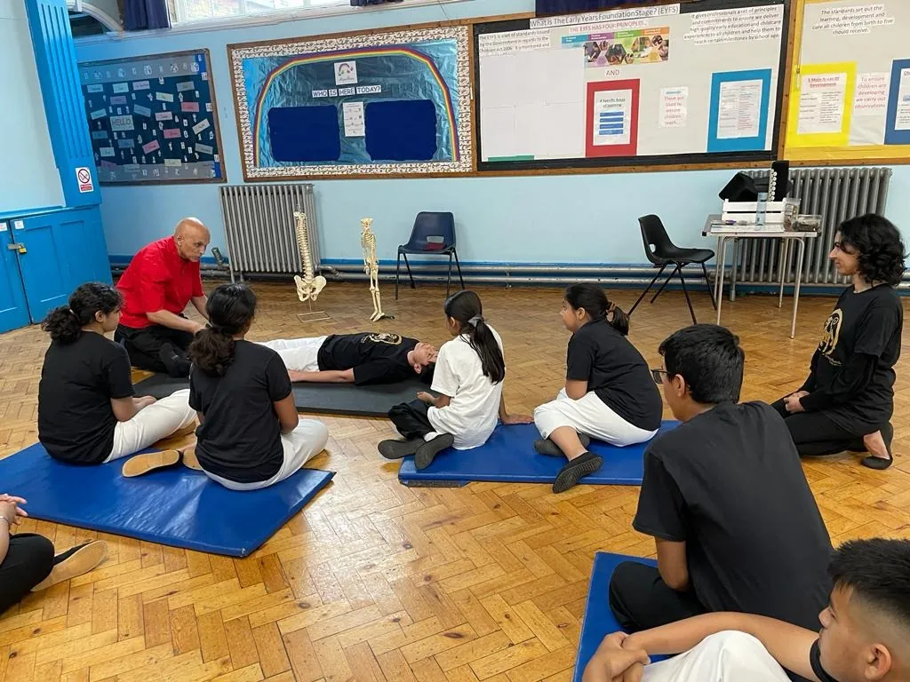

A safe space to learn and grow since 2006
Martial arts, healing and bodywork, taught by people who believe in their power to transform lives.
Founded by Azeem Mushtaq Sensei in 2006
EmptyHands Karate School welcomes everyone. The mission is simple: a safe space where people can learn and grow through martial arts, healing and bodywork.
Hundreds of students have trained at the dojo since it opened, reaching personal and martial arts goals along the way — and fifteen have earned their black belt.
Martial arts are about far more than physical skill. They build confidence, discipline and a sense of belonging, and many students describe the experience as life-changing, pointing to the self-esteem and resilience they have gained.
- Early yearsInspired by a family tradition of wrestling, Azeem discovers martial arts as a child and takes up kickboxing as a teenager at the Gold Steel Gym in Walthamstow.
- 1994Azeem begins his formal Karate path as a founding member of an East London dojo.
- 1999Launches ZenKarate, one of the first online Karate magazines.
- 1999Begins studying Tai Chi Chuan with Master John Ding.
- 2003Graduates from the British School of Shiatsu-Dô and founds the EmptyHands clinic.
- 2006EmptyHands Dojo opens its doors in Ilford.
- 2011First Yudansha (black belt) awarded.
- 2013MA in Coaching (Oxford Brookes) — the first Karate Coaching Model.
- 2020The Virtual Dojo keeps students training together through lockdown.
- TodayKarate, Tai Chi, Yoga, Shiatsu & Coaching across Ilford and Epping (invite only).
More than self-defence
Tailored coaching sessions
Workshops and seminars built around each student’s needs: Karate for self-defence, discipline and personal growth; the popular Self-Defence Scenarios workshops; and Coaching for Mental Health sessions exploring the psychological side of martial arts.
Holistic wellbeing
Shiatsu (acupressure) self-care sessions use ancient healing techniques to relieve stress and aid relaxation, while Tai Chi Chuan builds flexibility, balance and mindfulness at any age or fitness level.
Rehabilitation & self-development
Whether recovering from injury or looking for personal growth, every programme is tailored to the individual. Get in touch in confidence — there’s always someone here to listen and guide.


The friendships matter as much as the techniques
Community sits at the heart of EmptyHands. Students regularly take part in local events, demonstrations and charity initiatives — including the annual Charity Cup — making friends and giving back.
Research shows that martial arts training can improve both physical and mental health — see this study on martial arts and mental well-being.
Complete beginner or experienced practitioner, everyone finds a welcoming place to learn and grow. The community is wonderfully diverse, and every individual’s journey is celebrated.
In a word
to gain or acquire knowledge or skill
to fill with an animating, quickening, or exalting influence
to become better or advanced
to give ability, freedom — to enable or permit
to grow or transform into a new state
The first class is the hardest step — you won’t take it alone
New students pay as they go for the first few weeks. Just bring comfortable clothes.